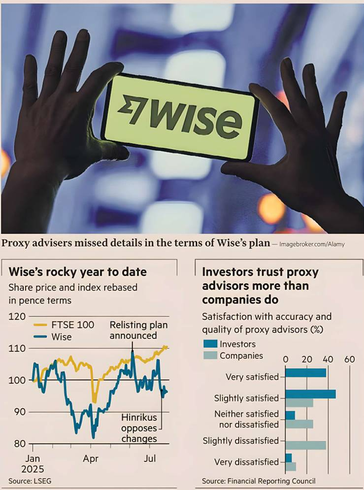

British fintech Wise may have won shareholder approval for its move to a US listing this week, but the proxy advisers that supported it could end up as losers. A fight over the terms of the move should have been a chance for the under-fire advisers to show their worth, but instead they managed to miss key details or fuel confusion with mixed messages.
Shortcomings among firms that advise shareholders on how to vote should worry investors more broadly. At issue was Wise’s attempt to bundle its plan to move with a decade-long extension of its dual-class shareholder structure. Taavet Hinrikus, Wise’s co-founder and third-largest investor, said Wise had not been upfront about its plans and was betraying its commitment to “radical transparency.”
In theory, ISS and Glass Lewis, the largest proxy advisers, don’t approve of dual-class shares. However, their reports — which recommended that investors support Wise’s relisting — failed to point out the proposed extension until Skaala highlighted it. They updated their reports noting governance concerns. They didn't change their recommendations.
Pirc, a smaller proxy adviser, did notice the governance issues and advised investors to vote against Wise’s proposals. But not before Pirc had shown Wise an earlier version of its report that supported it. Wise cited the endorsement and said that it had not realised that Pirc had ended up publishing a different recommendation.
Admittedly, Wise didn’t make it easy for ISS and Glass Lewis. The detailed proposals said its new holding company would have a dual-class structure “substantially similar” to the current arrangement. The fact that the current arrangement was set to expire next year — rather than next decade — was mentioned in a single bullet point halfway through the 98-page circular.
But being an expert on these sorts of issues is precisely what investors are paying proxies for. In the words of the Council of Institutional Investors, proxy advisers “serve as collective research providers” for those who lack the resources and time to stay on top of hundreds of companies in a diversified portfolio.
Highlighting the concerns earlier probably wouldn't have changed the result of Wise’s vote. Even an unfavourable recommendation might not have. Research commissioned by the UK’s Financial Reporting Council has found that their reports are influential, but not as all-powerful as critics make out. Still, drawing attention earlier would at least have encouraged a more open discussion.
Proxy advisers are used to criticism from politicians and executives such as Jamie Dimon and Elon Musk. In contrast, only 6 per cent of investors surveyed in the FRC report said they were dissatisfied with the service they receive.
The mis-steps over Wise weaken the argument, usually put forward by the companies, that proxy advisers are overly powerful attack dogs — but not for the right reasons. Investors should be as willing to question them as companies are.